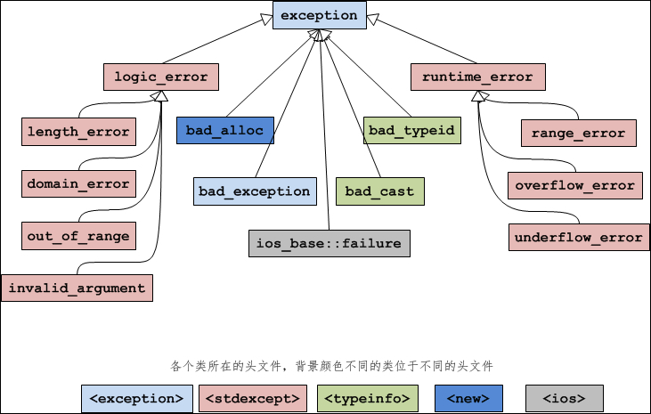

C++ exception类：C++标准异常的基类
C++语言本身或者标准库抛出的异常都是 exception 的子类，称为标准异常（Standard Exception）。你可以通过下面的语句来捕获所有的标准异常：
exception 类位于 <exception> 头文件中，它被声明为：
下图展示了 exception 类的继承层次：
先来看一下 exception 类的直接派生类：
logic_error 的派生类：
runtime_error 的派生类：
try{
//可能抛出异常的语句
}catch(exception &e){
//处理异常的语句
}
之所以使用引用，是为了提高效率。如果不使用引用，就要经历一次对象拷贝（要调用拷贝构造函数）的过程。exception 类位于 <exception> 头文件中，它被声明为：
class exception{
public:
exception () throw(); //构造函数
exception (const exception&) throw(); //拷贝构造函数
exception& operator= (const exception&) throw(); //运算符重载
virtual ~exception() throw(); //虚析构函数
virtual const char* what() const throw(); //虚函数
}
这里需要说明的是 what() 函数。what() 函数返回一个能识别异常的字符串，正如它的名字“what”一样，可以粗略地告诉你这是什么异常。不过C++标准并没有规定这个字符串的格式，各个编译器的实现也不同，所以 what() 的返回值仅供参考。下图展示了 exception 类的继承层次：

图：exception 类的继承层次以及它们所对应的头文件
图：exception 类的继承层次以及它们所对应的头文件
先来看一下 exception 类的直接派生类：
| 异常名称 | 说 明 |
|---|---|
| logic_error | 逻辑错误。 |
| runtime_error | 运行时错误。 |
| bad_alloc | 使用 new 或 new[ ] 分配内存失败时抛出的异常。 |
| bad_typeid | 使用 typeid 操作一个 NULL 指针，而且该指针是带有虚函数的类，这时抛出 bad_typeid 异常。 |
| bad_cast | 使用 dynamic_cast 转换失败时抛出的异常。 |
| ios_base::failure | io 过程中出现的异常。 |
| bad_exception | 这是个特殊的异常，如果函数的异常列表里声明了 bad_exception 异常，当函数内部抛出了异常列表中没有的异常时，如果调用的 unexpected() 函数中抛出了异常，不论什么类型，都会被替换为 bad_exception 类型。 |
| 异常名称 | 说 明 |
|---|---|
| length_error | 试图生成一个超出该类型最大长度的对象时抛出该异常，例如 vector 的 resize 操作。 |
| domain_error | 参数的值域错误，主要用在数学函数中，例如使用一个负值调用只能操作非负数的函数。 |
| out_of_range | 超出有效范围。 |
| invalid_argument | 参数不合适。在标准库中，当利用string对象构造 bitset 时，而 string 中的字符不是 0 或1 的时候，抛出该异常。 |
runtime_error 的派生类：
| 异常名称 | 说 明 |
|---|---|
| range_error | 计算结果超出了有意义的值域范围。 |
| overflow_error | 算术计算上溢。 |
| underflow_error | 算术计算下溢。 |
关注公众号「站长严长生」，在手机上阅读所有教程，随时随地都能学习。内含一款搜索神器，免费下载全网书籍和视频。

微信扫码关注公众号